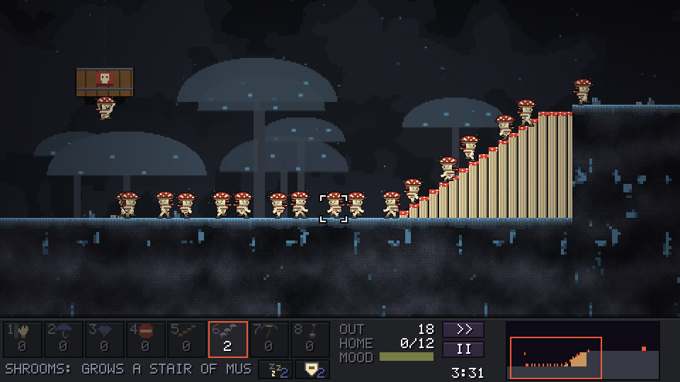

From the journals of the wandering scholar
Of the Mushroom Folk
Home: Glowing cavesLed by: The Mycelium (its Council of Elders)Substance: SporesClans: Redcap and Blackspore
The Mushroom Folk will consider your request. All of them. It may take some time.
site/img/journal/race-shroom-study.webpThe caves glow a sickly green, though the light comes mostly from their eyes, deep under caps that droop and rot at the edges. I was expected: the pale threads in the floor had carried word of me from somewhere far off.
They do not read thoughts. They are joined, quite plainly, by strands through the soil, and what one learns the network learns, eventually, the way gossip moves through a village. Each keeps an opinion of its own. One Mushroom Folk told me so at length.
I asked their Council of Elders who first asked them for spores. The network was silent for a long while, and then the Elders spoke about the damp. A puff of spores ended a quarrel in the next cavern before it began. They call that calm. The ones who were calmed did not seem to have been asked.
Mushroom Folk share a collective mind through mycelium networks, yet keep their own personalities and can act alone.
There are many networks, some spanning long distances, and they can disagree. Each network has its own Council of Elders. In Marching Orders, “the Mycelium” is the network itself.
They are not established as peaceful, and attitudes to outsiders vary. In the game their spores calm their own troops and briefly stun enemies; no wider pacifying power exists.
Not yet settled: what the Council of Elders looks like, and how different networks are told apart.
As observed in Marching Orders
| In short | Rotting fungus folk |
|---|---|
| Good at | Grow mushroom stairs, calm with spores |
| Bad at | Burn easily, slow in the heat |
| Own skills | Shrooms (grows a stair of mushrooms), Spore puff (calms troops, stuns enemies) |
| Clans | Redcap: +1 spore puff if map has it; Blackspore: bunched morale heals 10% more |

Walk around the pale threads, not across them. They notice.
Spore print pressed below. It smells of cellars and something older.
site/img/journal/race-shroom-home.webp